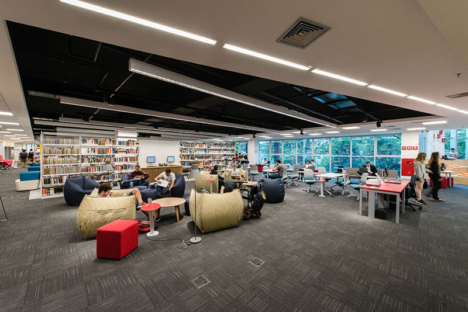

Evaluating Mastery-oriented Grading in an Intensive CS1 Course
Igor Montagner, Rafael Corsi, Andrew Kurauchi, Mariana Silva, Craig Zilles

Our context - Insper

- Brazilian private non-profit institution
- Scholarships + stipends for 10-15% of students
- CS major started in 2022
- Cohort-based (no courses outside of major)
Developer Life - Intensive CS1 course

- 24 hours per week
- 6 two-hour in person meetings
- 5 office hours
- Active learning with occasional mini-lectures and live coding
- Shared between 3-5 professors
DeveloperLife - Intensive CS1 course
Broad view into many aspects of computing
Students are able to deliver a working software
Every course from the 2nd semester on can involve coding
Developer Life - Assessment

- 5 low stakes formative quizzes $Q_i$ worth 10% of final grade
- 5 high(er) stakes Exams $E_i$ worth 55% of final grade
- Each week a new topic is included
Exams are spread over the semester to allow student to catch-up if necessary
Final exam grade is the average of the 3 largest scores
First experience (challenges)
- Tendency to increase the gap between the faster and the slower learners
- For students, catching-up was hard even with 5 exams
- Double the workload
- Even higher stakes on the last exam
- Coding-only exams gave us (instructors) little feedback on students weaknesses
Mastery Learning and Second-chance testing
Incorporate a way to help students catch-up into the “regular” course path
Second-chance testing: Every assessment includes a retake a few days later and some time dedicated to reviewing mistakes.
- Reduce failure rates
- Study for the second-chance remediating material missed on the first one
- Reduces self-reported test anxiety
Research Questions
- RQ1: Do second chances help students to increase their performance over time in intensive courses?
- RQ2: Are second chances effective in reducing stress/mental load/weight of assessments in intensive courses?
Intervention
Cohort of Fall 2023 had the following changes
- Add second chances for Quizzes
- Two types of questions:
- Short answer - parsons, multiple choice, fill the blank
- Coding - autograded, involve problem solving, manual code quality evaluation
- Extra week for reviewing material between Exams 1 and 2
Methodology
Mixed-methods study, $N=39$ students.
- Quantitative analysis
- Quiz and exam grades
- Coding and short answer
- Qualitative study
- Interviewed $10$ students
- Grounded Theory
- Prompts about mental state, study habits and test-taking strategies
# Second chances on Quizzes
Improvements in all topics
Final scores include both first and second attempts
Second chances on Quizzes
Students have different test-taking behaviors and gains
- ALL ($N=12$):
- From failling to passing grades
- FIRST ($N=6$):
- Improved from already good grades (>70%)
- SKIP ($N=21$):
- Almost all skipped $Q5$ (dictionaries)
- Might be procrastinating/gaming the system
Second chances on Exams
- Short answers are satisfactory from the start
- Coding questions start lower and trend upwards with decreasing standard deviation
Second chances on Exams
- 5 exams, average of the largest 3 scores
- Exams $E4$ and $E5$ are optional for some
- Taking $E4$ and/or $E5$ benefits students differently
- $N=5$ went from failling to passing grade
- $N=16$ improved a passing grade (<75%)
- $N=14$ improved an excellent grade (>75%)
Students are getting better over time
Encouraging results for the slower learners
Many students are taking all quizzes/exams even when they don’t needed it
More statistical details in the paper!
Interviews analysis
- $N=10$ students with different final grades
- Grounded theory analysis, 2 coding steps
-
Three main themes
- retake decision making
- mental state
- study habits
Retake decision making
Students find grading system confusing and are not sure if they can skip
(…) I didn’t know how to make the calculation to see if it was worth it for me to retake the exam
Exam is challeging in a good way
They were coding exercises that involved something quite challenging, you know? And we could do something interesting.
Mental state
First chance matters, but retakes help reduce anxiety after exams
It was good to have this second chance, because it was not discouraging. I think I even knew some cases of friends who didn’t do so well at the beginning, but they’re doing well now, and they didn’t give up.
Being rewarded for persistence
Study habits
Study habits did not change over time. Student display good attitude towards learning
You must always be studying, always up-to-date with the subject matter because, otherwise, it will accumulate, and the faculty won’t always be pushing you to study
Lessons Learned I
- Adding second-chance testing had a positive effect on grades
- Students reported decreased test-related stress
- but not for the first-chance
- Good attitude towards learning was observed
Lessons Learned II - improvements
Feedback delay is very relevant when multiple chances exist
Grading systems for large (in terms of content) courses
Evaluating Mastery-oriented Grading in an Intensive CS1 Course
Igor Montagner, Rafael Corsi, Andrew Kurauchi, Mariana Silva, Craig Zilles